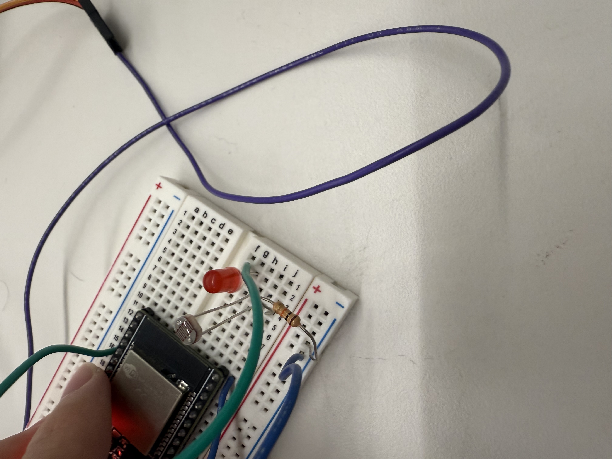
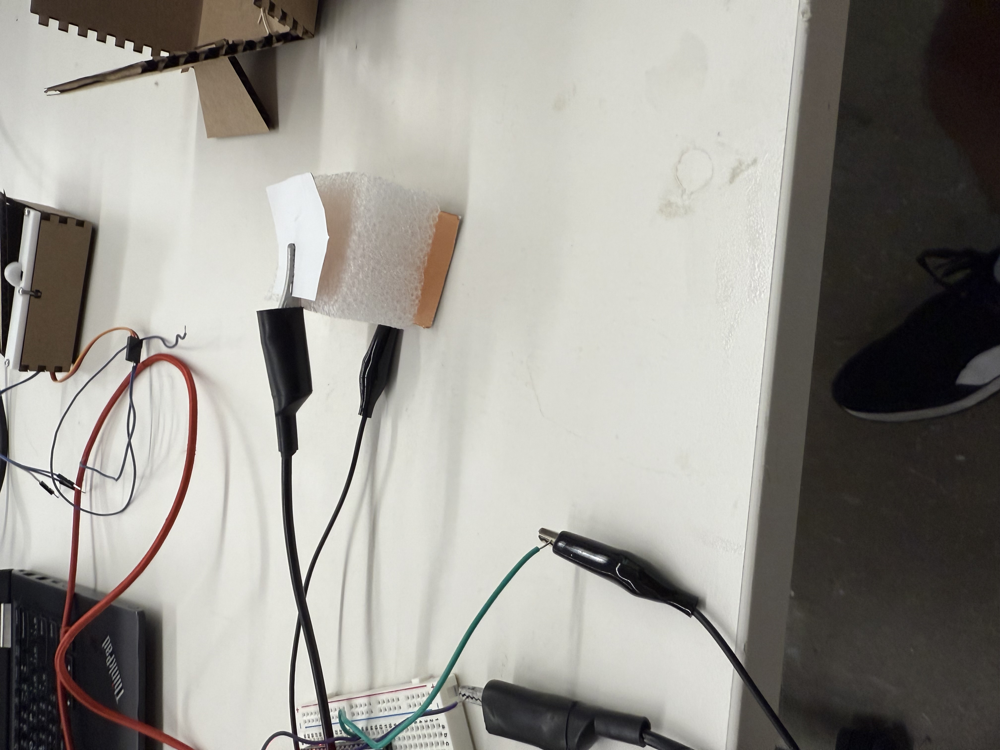
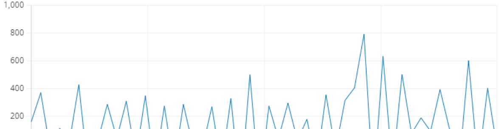

<div class="textcontainer">
<p class="margin"> </p>
<h3>Week 6: Electronic Inputs</h3>
<h4>Assignment 1: Phototransitor<h4>

<h5>Assignment 2: Capacitor</h5>
I had a very weird failure with this sensor. I wrote my code so that when it was bright enough the led would turn on, and when it was dark enough the led would turn off. However, I found it hard to calibrate this sensor and get steady readings, and the data points were just jumping around everywhere. At the time of using this sensor, I didn't understand why I couldn't get good readings, so I moved on to the capacitor sensor instead. Looking back to this, however, I believe that the disruption in the data could have been a result of connecting the led and phototransitor in series. Since the lightbulb heats up and cools down when it is lit or off, it could have affected the overall resistance of the circuit, thereby affecting the readings on my phototransitor.
<h6>Assignment 2: Capacitor</h6>


<h7>Data analysis:</h7>
The lower bound of my anaolog reading was around 800 (plates maximum disance apart) before it became wonky, and the higher bound of my analog reading was around 2000 (when the plates are pressed together on the styrofoam).
<img style = "width: 100%" src="capacitance calculations.png">
</div>